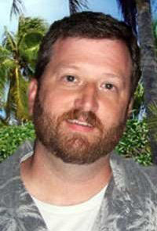

About Me

I am a seasoned programmer with a B.A. from Samford University, who has also taken advantage of further adult education in programming, database design, and full stack web development.
My work programming robotic systems controls gave me extensive experience in building proof of concept systems, connecting into customer databases, building flexible user interfaces, and generating reports and providing real-time data from the system .
I am currently a part-time student at UCF and freelance web developer, interested in full-time work in the web development field.
I am focused on providing elegant solutions by writing object based programs that provide maximum flexibility and code reusability, that also present intuitive interfaces for the user experience. I have lead teams of programmers to push projects forward in design, development, debugging, and implementation.
I enjoy the collaborative nature of well executed projects, and I am always looking for “+1” opportunities to exceed expectations.